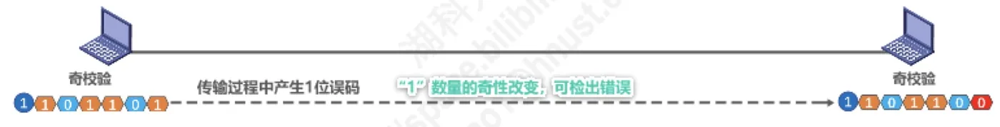
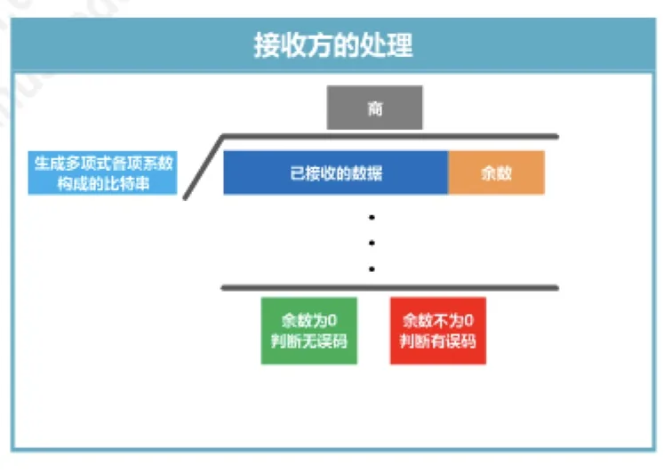

计算机通信与网络 · 第 3 章 数据链路层
3.3 差错检测
实际的通信链路都不是理想的，比特在传输中可能出错。上一节在帧尾留了一个 FCS 字段，这一节就来回答它到底是什么、怎么算出来、接收方又如何据它判断帧有没有出错。我们从最简单的奇偶校验讲到数据链路层真正使用的循环冗余校验 CRC，并说清「检错」与「纠错」的区别。
1. 比特差错与误码率
实际的通信链路都不是理想的，比特在传输过程中可能会产生差错：1 可能会变成 0，而 0 也可能变成 1，这称为比特差错。在一段时间内，传输错误的比特占所传输比特总数的比率称为误码率 BER（Bit Error Rate）。
使用差错检测码来检测数据在传输过程中是否产生了比特差错，是数据链路层所要解决的重要问题之一。上一节看到的帧格式里，以太网 V2 的 MAC 帧末尾有 4 字节的 FCS，PPP 帧末尾有 2 字节的 FCS，它们都是用来存放差错检测码的。下面介绍两种差错检测方法。
2. 奇偶校验
奇偶校验的做法是：在待发送数据后面添加 1 位奇偶校验位，使整个数据（包括所添加的校验位在内）中「1」的个数为奇数（奇校验）或偶数（偶校验）。接收方收到后重新数一遍「1」的个数，如果奇偶性不对，就说明传输中出了错。
它的检错能力是有限的，规律可以总结为一句话：
- 如果有奇数个位发生误码，则「1」的个数的奇偶性发生变化，可以检查出误码；
- 如果有偶数个位发生误码，则奇偶性不发生变化，不能检查出误码（漏检）。

正因如此，奇偶校验只能发现一部分错误，检错能力较弱，实际网络中更多使用下面这种更强的检错方法。
3. 循环冗余校验 CRC
循环冗余校验 CRC（Cyclic Redundancy Check）的基本思想是：收发双方约定好一个生成多项式 G(x)；发送方基于待发送的数据和生成多项式计算出差错检测码（冗余码），将其添加到待传输数据的后面一起传输；接收方则用同样的生成多项式去计算收到的数据是否产生了误码。CRC 的运算全部是「模 2 运算」，也就是按位异或（相同为 0、不同为 1）、不进位也不借位。

（1）发送方的处理
发送方要依次做四件事：
- 构造被除数：在待发送信息的后面添加生成多项式最高次数个 0（这些 0 仅作为位数的标记，用来防止计算过程中对错位）；
- 构造除数：把生成多项式各项系数构成的比特串作为除数；
- 做「除法」：对被除数做模 2 除法（逐位异或），得到余数——这个余数就是冗余码；
- 检查余数：余数的位数应与生成多项式的最高次数相同，如果位数不够，则在余数前补 0 补足位数。
最后把待发送数据和冗余码拼接在一起发送出去。
以原讲义的例子走一遍：待发送信息为 101001，生成多项式为 G(x) = x³ + x² + 1。它的最高次数是 3，所以被除数 = 101001 后面添 3 个 0 = 101001000；各项系数构成的除数 = 1·x³ + 1·x² + 0·x + 1 = 1101。做模 2 除法可得余数 001，补足 3 位后就是冗余码，于是实际发送的数据是 101001001。
（2）生成多项式的举例与常用取值
生成多项式如何变成除数是固定规则：把各项系数依次写出来即可。例如
- G(x) = x⁴ + x² + x + 1 = 1·x⁴ + 0·x³ + 1·x² + 1·x + 1，各项系数构成的比特串为 10111。
算法要求生成多项式必须包含最低次项（即常数项 1）。实际协议中常用的生成多项式有：
- CRC-16 = x¹⁶ + x¹⁵ + x² + 1；
- CRC-CCITT = x¹⁶ + x¹² + x⁵ + 1；
- CRC-32 = x³² + x²⁶ + x²³ + x²² + x¹⁶ + x¹² + x¹¹ + x¹⁰ + x⁸ + x⁷ + x⁵ + x⁴ + x² + x + 1。
（3）接收方的处理
接收方把收到的信息整个作为被除数，除数仍是生成多项式各项系数构成的比特串，做同样的模 2 除法，然后检查余数：
- 余数为 0，可认为传输过程无误码；
- 余数不为 0，可认为传输过程产生了误码。
例如接收到的信息为 101101001、生成多项式仍为 G(x) = x³ + x² + 1（除数 1101），做模 2 除法得到的余数不为 0，说明这次传输中产生了误码。（若收到的是对方发出的 101001001，则余数为 0，判定无误码。）
4. 检错与纠错
检错码与纠错码是两回事，用途和代价都不同：
- 检错码只能检测出帧在传输过程中出现了差错，但并不能定位错误，因此无法纠正错误；
- 要想纠正传输中的差错，可以使用冗余信息更多的纠错码进行前向纠错。但纠错码的开销比较大，在计算机网络中较少使用。
相比之下，循环冗余校验 CRC 有很好的检错能力（漏检率非常低），虽然计算比较复杂，但非常易于用硬件实现，因此被广泛应用于数据链路层。
那么检测出差错的帧该怎么办？在计算机网络中通常采用后续课程将要讨论的检错重传方式来纠正传输中的差错，或者仅仅是丢弃检测到差错的帧——这取决于数据链路层向其上层提供的是可靠传输服务还是不可靠传输服务。下一节就从可靠传输的基本概念讲起。
本节小结
- 比特在传输中可能由 1 变 0、由 0 变 1，称为比特差错；误码率 BER 是错误比特占总传输比特的比率；用差错检测码检测比特差错是数据链路层的重要问题之一，帧尾的 FCS 就是放检错码的地方；
- 奇偶校验在数据后添加 1 位校验位使「1」的个数为奇数（奇校验）或偶数（偶校验）：奇数个误码可以检出，偶数个误码会漏检；
- CRC 由收发双方约定生成多项式 G(x)：发送方在数据后补最高次数个 0 作被除数、以系数比特串作除数做模 2 除法，余数补足位数后作为冗余码附在数据后面发送；接收方把收到的信息整体作被除数做同样的除法，余数为 0 判无误码、不为 0 判有误码；
- 生成多项式必须包含最低次项；常用 CRC-16、CRC-CCITT、CRC-32；
- 检错码只能发现错误不能定位和纠正；纠错要使用冗余信息更多的纠错码做前向纠错，开销大，网络中较少使用；CRC 漏检率低又易于硬件实现，因而在数据链路层被广泛采用，出错帧通常靠检错重传或直接丢弃来处理。